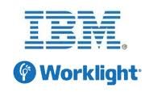
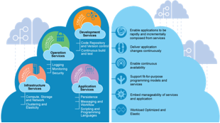
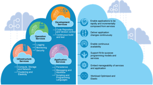

IBM Emerging Technology - Mobile
The Emerging Technology team collaborates with IBM Research, our product development groups right through to our front line sales force and business development teams.
This allows us to tap into a huge depth of knowledge and to deliver Mobile First solutions across multiple industries
The Emerging Technology group work with IBM's CIO office mobile team to develop innovative solutions
The team have been working with the IBM Office of the CIO developing secure first of a kind applications and rolling out services to IBM employee's 100,000 MDM registered devices
Solutions developed have included apps for VOIP communications, secure browsing and information retrieval.
The ET team hosts several security experts and can provide guidance and development resource to implement end to end security for Mobile deployments.
We have worked alongside the IBM CIO office to secure mobile deployments and integrate existing identity management systems with IBM products such as Worklight, IBM Endpoint Manager and our recent acquisition MaaS360 from Fiberlink.
The ET team are working with CIO and Fiberlink to integrate the MaaS360 container SDK with existing IBM mobile apps.

The IBM Softphone project provides a secure VOIP application to employees.
The ability to make free calls when working offsite and travelling to see customers reduces communications costs and allows IBMers without calling plans to make better use of their time rather than putting in expense claims.
Softphone is deployed across 5 different continents and used by 15,000 IBMers.
IBM VANI (Voice Activated Natural Interface) is a joint project between ET the IBM CIO Office and IBM Research. VANI is a mobile app that enables speech querying of the IBM Faces and Answers services, allowing hands free lookup of employee information and voice search of the Answers Q&A service.
Automatic speech recognition and text to speech services are provided by the research iTrans platform service using custom domain specific language models built from information mined from the faces and answers databases.
The IBM Secure Browser app for iOS and Android enables employees to securely access corporate Internet sites and networks with no VPN required.
The browser is a result of the Emerging Technology teams collaboration with the IBM CIO office and the IBM Mobile Connect product team.
The browser is currently in pilot with a group of 1500 users and was used at the 2014 kickoff event by 350 of IBM's top executives.
Smarter Commute is a mobile app for Android and iOS allowing car drivers using a smart phone to publish their active route to work on the Smarter Commute website.
Colleagues can see the route, and the car's location, enabling them to stand in a safe place on the route and request a lift.
The driver's smart-phone announces using voice technology that "Jo Smith has requested a lift in 500 meters on Hursley Road" and will display their colleagues image, so they can be recognised.
Shared trips are recorded and savings can be viewed on the Smarter Commute website.
The Emerging Technology team have worked with major automative companies including Jaguar Landrover to produce mobile apps for a number of purposes including dashboarding sales statistics and creating a car configurator which is visible in the GBS Automotive showcase in Hursley.
In collaboration with the University of Sheffield Advanced Manufacturing Research Centre and IBM GBS ETS created a solution to aid engineers in maintenance and repair operations.
The mobile system, using a combination of augmented reality and robotics, will help field engineers accurately locate equipment, provide them with critical information and receive real-time visual support from supervising experts based remotely
Mobile offers new ways of interacting with the world around us...
The commoditisation of smartphones has brought about a common set of standard sensor functions and services such as geolocation, motion, audio and visual capture effectively turning devices into mobile sensor hubs.
The reach of the device to other sensors in the vicinity has also been increased with the development of bluetooth low energy capabilities and in some cases Near Field Communication (NFC).
The Emerging Technology team are exploring the possibilities for a variety of applications including health care, transportation and indoor location.
The Emerging Technology team are working with Bluetooth LE technology and WiFi device tracking.
iBeacons are devices that use Bluetooth Low Energy to emit a signal that can be received by a smartphone without pairing with the device.
iBeacon technology can be used for a number of purposes one of which is indoor location, the smartphones position can be triangulated according to the beacons it can see.
iBeacons can also be used purely for proximity detection and can trigger a smartphone app to share some data about it's location, for example a customer with a loyalty app on their phone may be standing at a certain display in store and be sent an offer.
The VoiceBank project addresses the problem of people who have lost their voice through laryngeal cancer, where the voice box is removed.
Many patients use a prosthesis or an electrolarynx to communicate, which result in the loss of personality in the person's voice. The technology is also expensive for the NHS.
VoiceBank allows a pre-op patient to 'bank' their voice by recording a set of sentences.
A mobile application with predictive text input is then used post-op to speak using a voice synthesized from the patients recorded samples.
Major retailers face constantly changing environments, and must consider daily variations in consumer demand, manufacturer promotions or holidays to achieve the right arrangement and assortment of products in the store.
The Emerging Technology bridged the gap between IBM Research and Tesco to deploy a visual analytics Mobile App to Manage Product Placement
Tesco is testing the IBM solution at a pilot location near London.
“Delivering a better shopping experience to our customers includes making sure products are well stocked and easy to find. The IBM application will help us to improve store operations beyond the current manual processes and barcode-based methods."
said Mike McNamara, CIO, Tesco.
Mobile technology has many integration points, to be a Mobile First company a sound integration strategy must be adopted.
The Emerging technology team has a strong background in messaging and a particular afinity with the MQTT publish subscribe messaging system.
MQTT provides an extremely flexible way of integrating the many sensors and devices together and is a great way of pushing messages securely to mobile devices.
The Universal Information Framework (UIF) uses MQTT messaging to provide a flexible bidirectional messaging platform for connecting back office systems with mobile devices.
This secure low power/low bandwidth system is perfect for extending business process flows out to employees in the field.
APIs are playing an increasing part in the expansion of traditional enterprise as information becomes a valuable commodity.
Providing a scalable well structured API will keep you a step ahead of competitors or allow your critical data to reach a range of channels including smartphones.
On the device side providing SDKs for the most popular platforms will encourage developer adoption.
The ET team have experience in developing SDKs for iOS and Android platforms.
IBM have fully committed to Mobile with a raft of portfolio expanding acquisitions including the Worklight platform and the cloud based MDM solution MaaS360 from Fiberlink.
With the acquistion of cloud systems provider Softlayer and our commitment to providing a PaaS platform in the form of bluemix, IBM now provides the platforms to securely scale mobile application backends.
The ET Mobile team is looking at the development processes and continuous integration steps needed to rapidly create, deploy and manage mobile platforms.
ET also have several code contributors to cloudfoundry.org the open source project Bluemix is based upon, positioning us perfectly to make the most of the platform.
 

The Emerging technology team are unique within IBM in that they can instrument almost anything and use a variety of network and transmission protocols to deliver data to the right place.
Smartphones and tablets are the new all purpose integration hub and can be used as both control devices and relays for information from sensors and other mobile devices such as smart watches, fitness bands and other custom made hardware.
The ET team has had experience in creating custom hardware configurations for various industry settings. Mobile devices can provide the interface to custom hardware and act as a display for information outputs.
The development of HTML5 brings with it some exciting features not least the inclusion of media capture function previously absent from the JavaScript specification.
The ability to capture video and audio without special plugins has opened up the possiblity for a range of collaboration applications that can be adapted for both desktop and mobile formats using the same codebase.
Using WebRTC we are looking to take advantage of these new capabilities to create unified collaboration systems that can seamlessly connect users both on mobile devices and laptops.